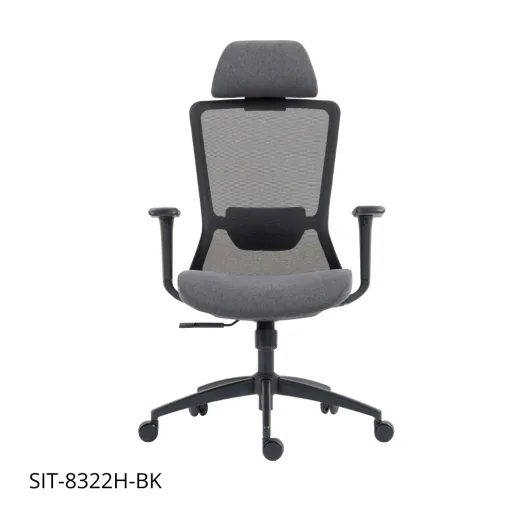
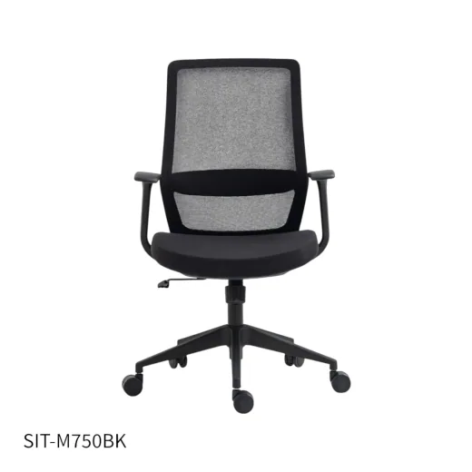
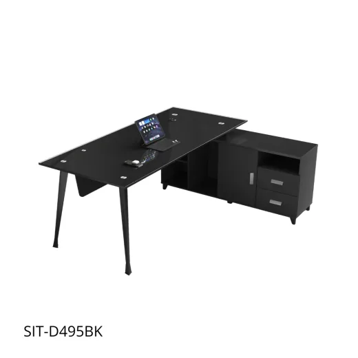
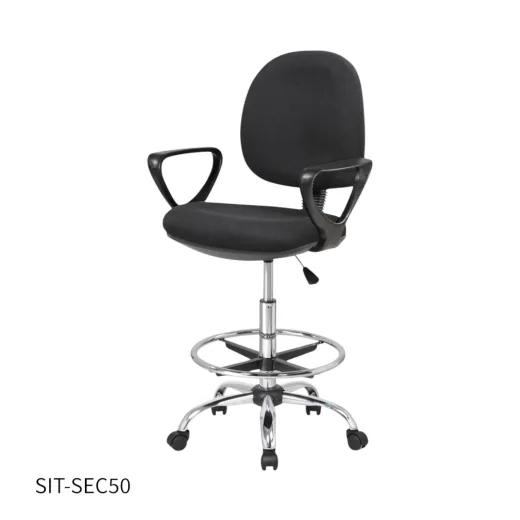
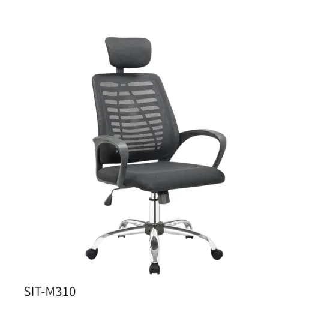
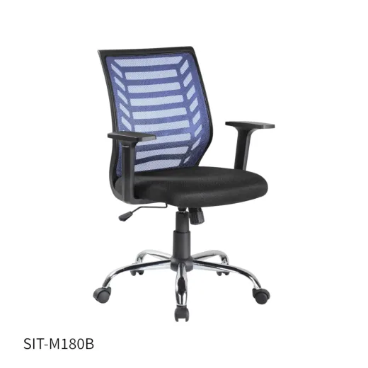
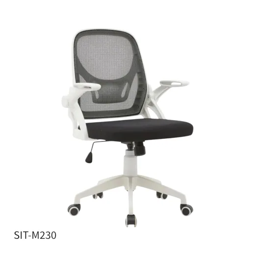
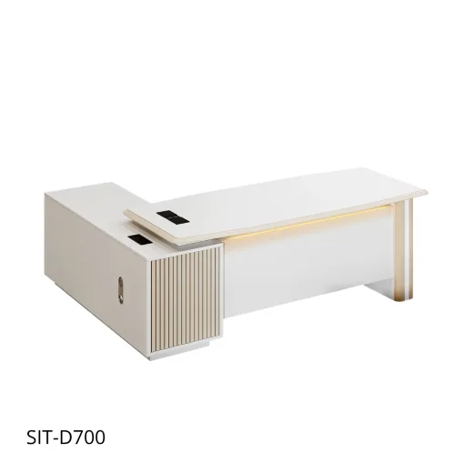
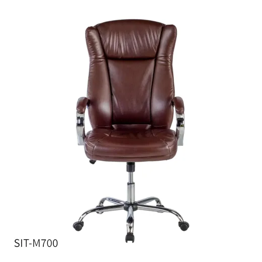

Inicio › Sillas y escritorios › SIT
Sillas y escritorios SIT en Honduras: precios comparados
31 productos SIT en 1 tiendas (iOffice). Desde L 820.35.
 Silla de espera SIT individual cromada con brazo, con 3 asientos. SIT-VIST3L 4,628.16En iOffice
Silla de espera SIT individual cromada con brazo, con 3 asientos. SIT-VIST3L 4,628.16En iOffice
Silla SIT ejecutiva de oficina 300 lb, en color negro o gris nylon, poliéster, transpirable, tela · SIT-8322H-BK · SIT-8322H-GR NegroL 4,871.4En iOffice Silla SIT de 3 Asientos con Cojín para sala de Espera con brazo. Color Gris y Negro. SIT-VIST3CL 4,887.5En iOffice
Silla SIT de 3 Asientos con Cojín para sala de Espera con brazo. Color Gris y Negro. SIT-VIST3CL 4,887.5En iOffice Silla SIT ejecutiva con respaldo alto, mecanismo, reposabrazos, marrón piel sintética. SIT-M650L 4,083.68En iOffice
Silla SIT ejecutiva con respaldo alto, mecanismo, reposabrazos, marrón piel sintética. SIT-M650L 4,083.68En iOffice Silla SIT ejecutiva 300 lb con respaldo alto negro, superficie de Nylon ajustable · SIT-M880L 5,775.3En iOffice
Silla SIT ejecutiva 300 lb con respaldo alto negro, superficie de Nylon ajustable · SIT-M880L 5,775.3En iOffice Silla SIT de 2 Asientos con Cojín para sala de Espera con brazo. Color Gris y Negro. SIT-VIST2CL 3,620.46En iOffice
Silla SIT de 2 Asientos con Cojín para sala de Espera con brazo. Color Gris y Negro. SIT-VIST2CL 3,620.46En iOffice Silla SIT ejecutiva gris o negro, poliéster transpirable, nylon, clase 4 300 lb ajustable · SIT-9373H-FABRIC · SIT-9373H-PU GrisL 6,277.85En iOffice
Silla SIT ejecutiva gris o negro, poliéster transpirable, nylon, clase 4 300 lb ajustable · SIT-9373H-FABRIC · SIT-9373H-PU GrisL 6,277.85En iOffice
Silla SIT Ejecutiva, respaldo de malla, soporte lumbar ajustable, brazos fijos. Peso: 250 Lbs.SIT-M750Desde L 3,214.682 versiones · 1 tienda Silla SIT Ejecutiva, Respaldo alto, cojín lumbar, altura ajustable. Color Negro. Peso: 250Lbs. SIT-M305L 3,208.5En iOffice
Silla SIT Ejecutiva, Respaldo alto, cojín lumbar, altura ajustable. Color Negro. Peso: 250Lbs. SIT-M305L 3,208.5En iOffice
Escritorio SIT tipo L base metálica, mesa auxiliar melamina nogal con medidas 160 W x 80 D x 75 H cm · SIT-D535WALL 7,164.5En iOffice Silla SIT de espera, 2 asientos con brazos, Cromado, Color gris. SIT-VIST2L 2,894.79En iOffice
Silla SIT de espera, 2 asientos con brazos, Cromado, Color gris. SIT-VIST2L 2,894.79En iOffice
Silla SIT Cajero o Secretarial, tela de malla, alta con anillo para pie, neumático de altura. Color Negro, Peso: 250Lbs. SIT-SEC50L 2,824.4En iOffice Silla SIT Ejecutiva, respaldar medio, superficie de nylon, reposabrazos ajustables. Color Negro y Gris. Peso: 200Lbs. SIT-M250 Gris claroL 2,576.93En iOffice
Silla SIT Ejecutiva, respaldar medio, superficie de nylon, reposabrazos ajustables. Color Negro y Gris. Peso: 200Lbs. SIT-M250 Gris claroL 2,576.93En iOffice
Silla SIT Ejecutiva, base cromada, Color Negro y Azul. Peso: 200Lbs. SIT-M310 NegroL 2,486.71En iOffice
Silla SIT Ejecutiva, tejido de malla negro y azul, Base Cromada, Color Negro y Azul. Peso: 200Lbs. SIT-M180 AzulL 2,242.82En iOffice Escritorio SIT tipo L base metálica, mesa auxiliar melamina color blanco y gris 160 x 80 x 75 cm SIT-D635WG16 · 180 x 80 x 75 cm SIT-D635WG18 · 200 x 80 x 75 cm SIT-D635WG20 160 cmL 10,103.9En iOffice
Escritorio SIT tipo L base metálica, mesa auxiliar melamina color blanco y gris 160 x 80 x 75 cm SIT-D635WG16 · 180 x 80 x 75 cm SIT-D635WG18 · 200 x 80 x 75 cm SIT-D635WG20 160 cmL 10,103.9En iOffice Silla SIT Ejecutiva, cuero sintético, asiento acolchonado. Color Negro. Peso: 250Lbs. SIT-M390L 1,904.4En iOffice
Silla SIT Ejecutiva, cuero sintético, asiento acolchonado. Color Negro. Peso: 250Lbs. SIT-M390L 1,904.4En iOffice Silla SIT de Espera y Recepción, respaldo de malla, soporte lumbar. Peso: 220Lbs. SIT-V60Desde L 1,144.714 versiones · 1 tienda
Silla SIT de Espera y Recepción, respaldo de malla, soporte lumbar. Peso: 220Lbs. SIT-V60Desde L 1,144.714 versiones · 1 tienda Silla SIT Ejecutiva, tejido plástico de Malla con Reposabrazos cromado, Color Negro. Peso: 250Lbs. SIT-M332L 1,783.65En iOffice
Silla SIT Ejecutiva, tejido plástico de Malla con Reposabrazos cromado, Color Negro. Peso: 250Lbs. SIT-M332L 1,783.65En iOffice Silla SIT Ejecutiva, base cromada, apoyo acolchonado. Color Negro. Peso: 200Lbs. SIT-M275L 1,689.37En iOffice
Silla SIT Ejecutiva, base cromada, apoyo acolchonado. Color Negro. Peso: 200Lbs. SIT-M275L 1,689.37En iOffice
Silla SIT Ejecutiva SIT, Tela de Malla, Base de PVC Color Blanco. Peso: 190Lbs. SIT-M230 NegroL 1,558.27En iOffice Silla SIT Secretarial, Tela de Malla, Reposa Brazos, Altura Media. Color Negro. Peso: 200Lbs. SIT-SEC30RL 1,296.51En iOffice
Silla SIT Secretarial, Tela de Malla, Reposa Brazos, Altura Media. Color Negro. Peso: 200Lbs. SIT-SEC30RL 1,296.51En iOffice
Escritorio SIT tipo L, con luz led, área de almacenamiento con pasacable, color blanco y beige · SIT-D700L 21,521.25En iOffice Silla SIT para Visitante o de Espera, sin brazo, sillón acolchonado. Color Negro. Peso: 250Lbs. SIT-V40L 820.35En iOffice
Silla SIT para Visitante o de Espera, sin brazo, sillón acolchonado. Color Negro. Peso: 250Lbs. SIT-V40L 820.35En iOffice Silla SIT Ejecutiva, respaldo alto, ajustable, base cromada. Color Negro. Peso: 250Lbs. SIT-M315 Gris y azulL 4,252.09En iOffice
Silla SIT Ejecutiva, respaldo alto, ajustable, base cromada. Color Negro. Peso: 250Lbs. SIT-M315 Gris y azulL 4,252.09En iOffice
Silla SIT Ejecutiva de respaldo alto mecanismo base y Apoyabrazos cromados, Color marrón. Peso: 300Lbs. SIT-M700L 4,036.5En iOffice Silla SIT Ejecutiva, malla negra, inclinación flexible, ruedas de goma, apoyo lumbar. Peso: 250 Lbs. SIT-M350 NegroL 2,929.54En iOffice
Silla SIT Ejecutiva, malla negra, inclinación flexible, ruedas de goma, apoyo lumbar. Peso: 250 Lbs. SIT-M350 NegroL 2,929.54En iOffice
Preguntas frecuentes
¿Dónde están más baratos los sillas y escritorios SIT en Honduras?
Revisa cada producto: mostramos el precio en cada tienda.